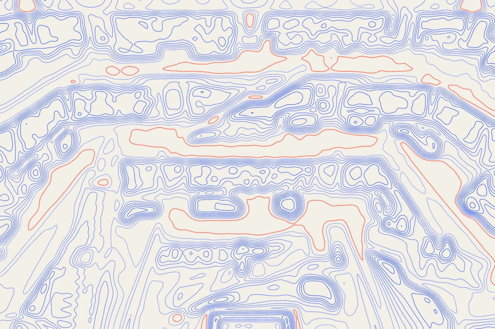

The importance of good information
We receive information relentlessly. The acquisition of information is a necessity, and every decision we make is informed. Anyone and everyone can and does make informed decisions. However, the ability to make a well informed decision is reserved for those who are able to obtain good information. “Good information” is hard to define and really a relative concept depending on the field you are operating in. Broadly, it is information which is as accurate as possible, meaning it is reasonable to then rely upon it when making a decision.
This piece does not seek to provide a methodology for the production of good information. It seeks to emphasise the value in being able to acquire it effectively. This ability to recognise when information is “good” is perhaps the most valuable asset an individual or business can possess.
The dangers of sources: the race for output
It is also one which, as information can now be found instantaneously from billions of sources, few possess. Even embarking on the process of acquiring information can be overwhelming. This arises from not knowing which sources to begin with, and raises the question: “What makes a source one which is likely to provide good information?”
The nature of online sources, be they at the low journalistic or high academic ends of the spectrum, is that the vast majority are output driven. They seek a volume of interaction with their pieces. The pursuit of output is generally at the cost of quality (a lack of accuracy or rigour in acquisition of information cited or used). Thus, “good” information is absent or hidden amongst inaccurate or irrelevant claims.
This reveals two patterns:
Producers of information are perhaps less rigorous in their processes of obtaining the information, given the race to publish it; and,
Not only are there a wealth of different sources, but each these individual platforms are expanding in size.
Therefore, the task of the acquirer is being made ever-more difficult with the proverbial haystack becoming larger.
Identifying “good” sources
“Begin with sources you trust”, so we are often told. This is a falsehood. It is more advantageous to use a respected source than a trusted one.
We as individuals trust sources. We are knowingly or unknowingly positively inclined toward certain sources because of long-term habits. However, repeatedly returning to trusted sources can lead to a lack of objectivity as an acquirer. Trust can be blind.
Alternatively, it is society collectively which respects sources. The collective element to attaining respect makes it difficult for a source to achieve, but also gives it its value. The collective also assist us in highlighting how sources can have a recognised agenda, but still be of value. Further, sources want to remain respected to then retain acquirers who use them, so beginning with respected sources is a logical point of departure.
The value and challenge of governance
Sources are respected for their good governance. Traditionally, publishers and editors had a semblance of good governance, to ensure they avoided legal ramifications for any falsehoods they printed or methods they used. This is being tended away from in traditional industries, and the rise of freely available online sources whose objective is the provision of a platform and immediacy of information has created a new type of source where good governance is clearly absent.
Demonstrating good governance is extremely difficult, and many sources struggle. This issue is not the central focus of this piece, though it is worth briefly commenting on. Lots of information is behind paywalls, but payment for information is not a symbol of good governance. What is most important is transparency regarding the operation of the platform.
At the heart of transparency is regulation. However, this raises further issues:
If, as is likely for a source to be respectable, it is regulated, the question to then be asked is: by whom?
If centrally self-regulated, consider what purpose this regulation is serving, what agendas the regulator might be possessing, and whether the regulation is implemented as stringently as is necessary for the platform to become a source which is respected.
If community regulated, consider the nature of the community which the platform is used by.
If unregulated, the researcher is the regulator, and it is only wise to treat all information on the site with scepticism until it is demonstrated otherwise.
An obvious example is the obtaining of information from social media platforms. These platforms’ governance structures are opaque, yet many take information found on them as “good”. This is not to say there is not good information on them, but it is very rare and requires a great deal of independent corroboration. Further, the algorithms used on such platforms force pre-selected information upon the acquirer, creating echo-chambers and individual blind-spots.
This issue can also be less apparent. The rapid development of AI-assisted search engines have the potential to make the acquirer’s task easier. Typing a command and receiving an immediate response is easy. However, the governance of these AI platforms is not transparent, agendas on questions of morality and the control of information are inherent in them, and the technology is advancing almost uncontrollably rapidly. The source of the information provided by AI engines is not given unless you ask for it in the command (this should be done, and that source then visited). Therefore, whilst it might feel like a search for specific information has been made easier, reliance solely on the ChatGPTs of this world is unwise. These platforms demand as much vigilance as any other source.
The risk of blind-spots and the value of testing
Knowledge blindspots are one of the most dangerous features of a decision-maker’s mind. Alleviating them is of tremendous benefit, and if an individual is not vigilant with their process for acquiring information, blindspots only grow.
Therefore, when acquiring information, it is imperative that a diversity of respected sources is used. This gives us the best chance to achieve a diversity in opinion, alleviate blindspots, and make a well informed decision.
We must have a series of respected sources, offering differing perspectives from which initial information is acquired. This information should be treated with scepticism, and tested against opinions of others. Selecting who to test information with is a personal decision. Elements of trust and also respect are present here: pick those people who have both. Again, be vigilant, and do not always test with the same person — ensure diversity.
Conclusion
Therefore, it is through a combination of personal vigilance when obtaining knowledge, and maintaining a circle of counsel which can offer insight and shape perspective, that information acquired can be viewed as “good” by a decision-maker, meaning they can then make a well informed decision.